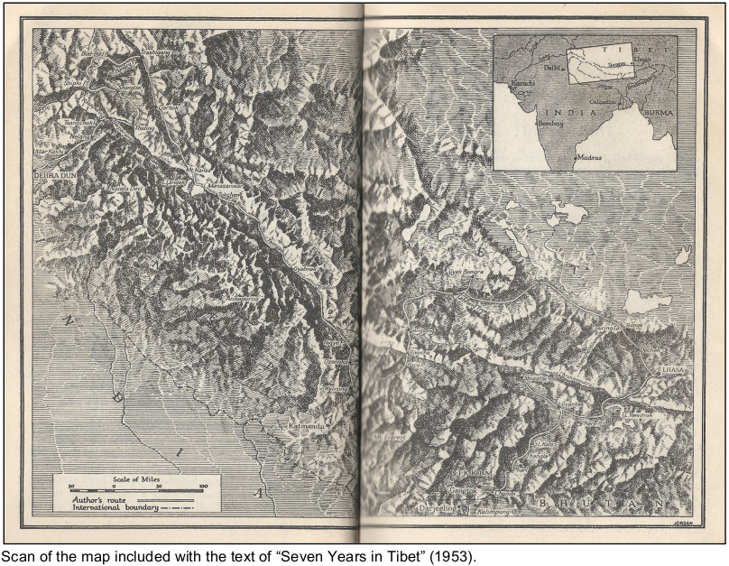

Seven Years in Tibet
2015-04
Mapping the journey by Henrich Harrer
http://jamaps.github.io/seven_years_in_tibet_map/
In 1944, Henrich Harrer, an Austrian prisoner of war, escaped a British internment camp in India and fled north into neutral Tibet. He travelled across Tibet, from the western frontier to the capital, Lhasa, in the east. In Lhasa, he worked for the Tibetan government and tutored the young Dalai Lama. Harrer was forced to leave Tibet in 1951 due to the Red Chinese invasion. After returning to Europe he wrote and published his accounts in a book titled Seven Years in Tibet. His book details the places he visited, the people he met, challenges faced along the way, and provides significant insight into Tibetan politics and culture. The book was first published in German in 1952 and then in English in 1953. It was quite popular after its release, as it provided significant insight into a part of the world that few Europeans had explored. Also, the world was attempting to understand contemporary political events of the Chinese occupation of Tibet. Since its release, the book has sold millions of copies and its text has been translated into over fifty languages.
I’ve read this book twice and both times I’ve encountered the same problem. I was constantly trying to figure out where Harrer was, geographically, at different points in his story. My edition of the book does include a map to aid the reader. The map is printed in black and white and spread over two pages. It outlines Harrer’s journey as well as specific places mentioned in the book. However, the map was difficult to read, had limited information, and required constant flipping back and forth between the map and the text.
To provide an alternative to this map, I built an interactive map, embedded in a webpage, to tell the story of Harrer’s journey in Tibet. My web-map is an attempt to create a map to act as a spatial reference for someone who is reading the book but also for someone who wants to understand Harrer’s story without delving into his text. I decided to use web-mapping as a cartographic medium as it provides interactivity and expanded geographic reference than what a static map could provide. Also web- mapping is potentially more accessible than offline digital mapping applications like Google Earth or ArcGIS. However, when building this map, I encountered several challenges that encumbered my ability to tell Harrer’s story. These included challenges of accuracy, level of detail, and customization. Despite these challenges, my web-map provides further spatial understanding of the story, Seven Years in Tibet.

I designed my map using JavaScript and HTML. HTML is a markup language used to create webpages and can be read by web browsers. JavaScript is dynamic programming language primarily used in web design. To build the map, I used an open source JavaScript library called Leaflet, which provides the tools to build interactive web- mapping applications. The result is a slippy map, a modern web-map that allows the user dynamically zoom in and out and pan the map in any direction by using a mouse.
The map is composed of map tiles, the slippy part of the map, and overlaying geometry, which tells Harrer’s story. Two sets of map tiles were included on this map. One is composed only of satellite images while the second is a styled map of OpenStreetMap data. Overlaying geometry included lines, points, and a polygon. The lines on the map outline the route taken by Henrich Harrer, the points describe major events that happened to Harrer and where they took place, and the polygon shows an approximate historical border of Tibet. The lines and polygon were drawn separately and then placed in the HTML document in geojson format using specifications from the leaflet.js library. The points were built using custom markers designed in Adobe Illustrator and then linked into the HTML document again using specifications from the leaflet.js library. Each point has a popup with descriptive text. Some of the popups also have images of Tibetan landscapes and architecture encountered by Harrer. Even though most of these are more recent images, they are of landscapes and architecture that would have looked similar 60 years ago when Harrer travelled through Tibet. The popups were styled using a CSS (cascading style sheet) document, which was linked to the HTML document. By adding points and popups, the map does not just show the path taken by Harrer, but also describes his story by associating text and images to specific locations.
By creating a map using HTML and JavaScript, most of the design process was through coding. I found this to be quite different than other maps that I have worked on. Most maps that I have made previous to this one were either drawn by hand on paper or drawn digitally in graphic design software or in GIS. To code this map, I used a text editor called Brackets in which I was able to type code while simultaneously viewing what I was editing on a live preview page in Google Chrome. I would toggle back and forth between Brackets and Chrome, between editing and testing my map. I wouldn’t edit or draw on the map itself; it was built entirely through external coding.
Mapping through HTML and JavaScript allowed for many customization options in creating the interactive components of the map including controls and zoom levels. Using JavaScript, I was able to tweak these features to behave how I wanted them to. However, I found there were limitations in my ability to customize the visual components of the map, specifically the map tiles. I included two sets of map tiles: satellite and cartographic. This allows for two different perspectives on Harrer’s journey. The satellite layer allows the user to visualize what kind of terrain Harrer encountered during his journey. Even though these are modern images, they would have looked similar 60 years ago when Harrer travelled through Tibet. The cartographic map layer is a styled map of OpenStreetMap data. It shows roadways, populated places, contour lines, and geographical features like mountains and glaciers. The problem with the cartographic map tiles is that they display features as they are today, not as they were 60 years ago. However, this was the best set of map tiles that I could find that suited the project. I couldn’t find any historical map tiles, so I had to make do with a map tiles that de- emphasized human geographical features and emphasized physical geographical features. I found this acceptable, as Tibet is a sparsely populated region. Originally, I wanted to design my own map tiles specifically for this project using TileMill or MapBox Studio, but alas I did not have the time.
I was also challenged over how much detail to include on the map as overlaying geometry. The overlaying geometry is composed of lines, points, and polygons. These components tell the story of Harrer, where he travelled and what he encountered during his journey. The more detailed the lines, the more detailed accounted of the route travelled by Harrer, and the more markers included, the more information available to the user about Harrer’s journey. However, there were limitations to how much detail to include on the map. The more information included, the more data in the document, and thus the more data required to be loaded by the web browser. Also, too much information on the map could result in over-saturation, meaning the user would not read it all, and possibly miss the important parts of the story. In designing the lines and markers, I attempted to strike a balance in terms of providing enough detail while not over-saturating the map with information.
There were also challenges of accuracy. It was often difficult to discern from the text exactly what path Harrer followed during his journey. He would mention that he travelled from one place to another; however, he wouldn’t always describe in detail which route he took to get there. So occasionally I had to guess his route, based on what I thought would be the most logical path between two places. I based my guesses on what route would be the most direct or traverse the least arduous terrain. Also, there were difficulties of locating particular places mentioned in the book. The spelling of some of the English exonyms for Tibetan places has changed over the decades since Harrer wrote his book. Also, several modern maps and geographic references, including Google Maps and OpenStreetMap, only show some place names in Chinese characters or pinyin, differing from the names mentioned in the book. Thus, attempting to locate specific places in the book was often ambiguous and may have resulted in a couple of mistakes. Overall though, the map is accurate enough to show Harrer’s overall path and the places he visited.
Despite design challenges, my map provides further spatial understanding of Harrer’s story, Seven Years in Tibet. The lines on the map depict Harrer’s route across Tibet while the points and popups describe events at different parts of his journey. By overlaying this information on a slippy, tile-based, web-map, it provides the user with ample geographical reference to Harrer’s journey. The map can be used as a reference for someone who is reading the book but also for someone who wants to understand Harrer’s story without delving into his text. However, for readers of the book, it would require them to have a screen and an Internet connection with them while their reading, which is often not the case. This could be partially solved for eBook readers as the map could be ported into the eBook version of the text. With further coding, it might be possible to link the page number of the book with Harrer’s location on the map. My map also allows for understanding of Harrer’s story even for those who have not read “Seven Years in Tibet”. The map does not only show the path taken by Harrer, but includes information in the form of text and images to outline the major events of his story and where they took place. Also, by being built as a web-map, it could be potentially be hosted on a server, and then be accessible to anyone with an Internet connection. In conclusion, despite design challenges, my map of “Seven Years in Tibet” provides spatial understanding of Harrer’s story for both readers and non-readers of his book.
References:
Harrer, Henrich. Seven Years in Tibet. Great Britain: Rupert Hart-Davis, 1953.
Martin, Douglas. “Heinrich Harrer, 93, Explorer of Tibet, Dies,” The New York Times, January 10, 2006. Accessed April 14, 2015, http://www.nytimes.com/2006/01/10/obituaries/10harrer.html